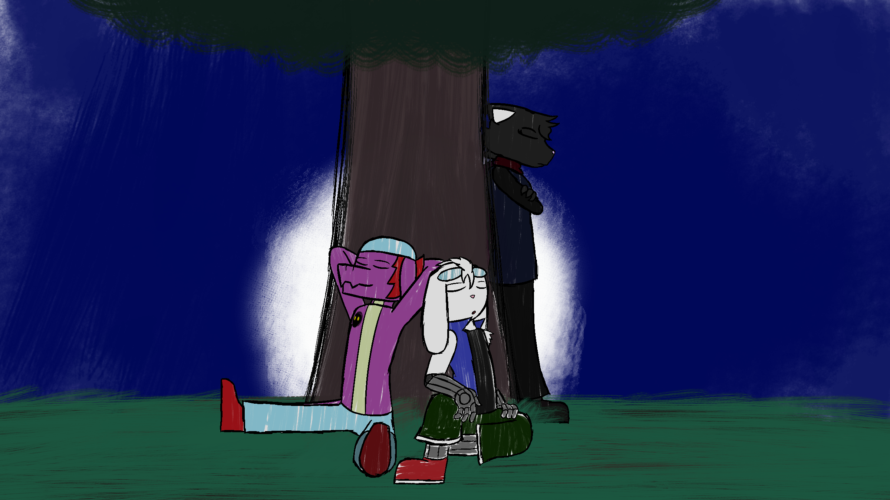
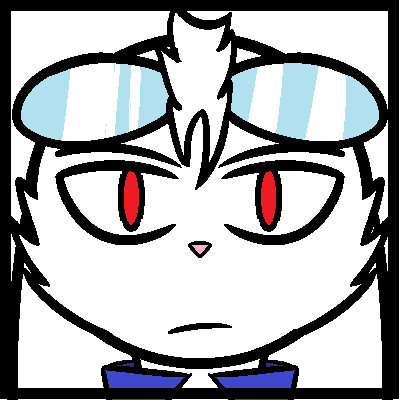

Another character of mine! His name's Rhett. He's repping this month since he was
chosen for a week-long AMA (Ask Me Anything) event on a Discord Server I'm apart of.
I didn't get as many questions compared to other characters who were chosen for the event
but I had a lot of fun animating the responses for each question I was given. It was a neat
challenge that I hope to try again in the future when I'm ready.
Oh yeah! I guess I should explain Rhett's deal too, huh? Rhett's a rabbit who lost his limbs during
an accident regarding his parents researching a new form of energy. Due to an unexpected variable,
the lab they were researching in exploded and Rhett lost his mother...along with his arms and legs
due to him being caught in the debris. His father survived but was broken mentally by the loss of
his wife. He managed to give Rhett prosthetic limbs but things would never be the same for the family.
Cute, right!? ...At least he still his friends.

 "Thank you for recapping my trauma,
Please leave."